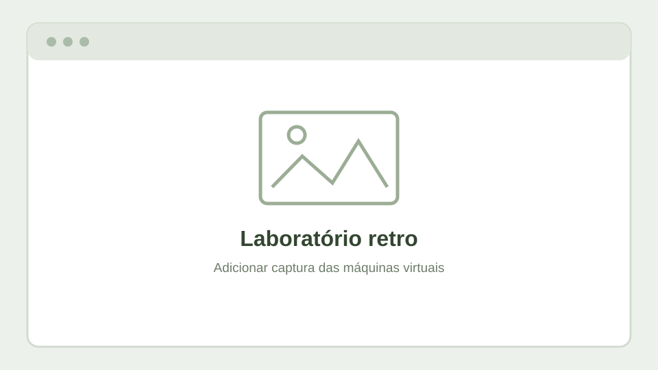

Projetos de experimentação
Laboratório retro
Testes com Windows NT, Windows 2000 e redes isoladas.
Explorar →Arranque pela rede
Instalações e recuperação de sistemas com PXE / iVentoy.
Explorar →Eletrónica
Diagnóstico, recuperação e circuitos experimentais.
Explorar →Energia e UPS
Continuidade de alimentação e monitorização de UPS.
Explorar →Laboratório de sistemas antigos
Máquinas virtuais dedicadas a sistemas históricos para estudo de interfaces, drivers, protocolos e procedimentos de instalação em ambientes isolados.

Arranque pela rede e recuperação
Experiências com PXE, servidores de arranque e organização de imagens ISO para instalação ou manutenção de sistemas.

Eletrónica e reparação
Documentação futura de avarias, instrumentos de medição, reparações e protótipos, com fotografias e explicações técnicas.
UPS e continuidade de serviço
Testes de comunicação com UPS, integração com sistemas de monitorização e análise de estratégias de desligamento controlado. Alguns ensaios ainda se encontram em desenvolvimento.